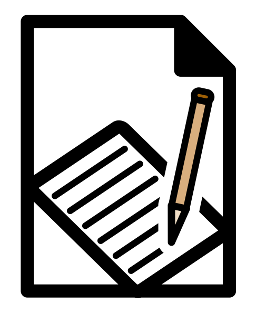
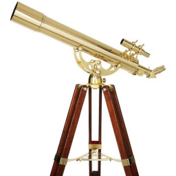

Education

How to write a technical or scientific report (publ. Dec 2024, edit. Dec 2025)Some guidance, mostly for science and engineering students, on how to write a scientific paper or technical report. I've updated this article slightly since I wrote it thirty years ago, to deal with the rise in web-based publication. But, frankly, I think that similar standards should apply to electronic and print reporting.
Categories: education
I frequently have to read documents that look as if the writer was given a bag of capital letters, and told to use them all up. Like many aspects of English, capitalization has few rules that are set in stone; but there are some conventions that serious writers ought to keep in mind.
Categories: education
There's no shortage of guidance on writing English that people will want to read. In science and technology, however, can we apply the same guidelines without losing information?
Categories: education
Was there ever a golden age of the apostrophe, when everybody used it the same? No.
Categories: education
Misrepresentations of scale are common in the literature of organizations that seek to deceive. However, it's sometimes difficult, or unhelpful, to draw diagrams to scale. This article tries to explain the difference between benign and pernicious distortions of scale. I'm picking on the flat-earthers for the purposes of illustration, but the presentational devices they use are common in business and politics as well.
Categories: science and technology, education, snake oil

Why we only see one side of the moon -- the odd phenomenon of tidal locking (Apr 2022)We only see one face of the moon from the Earth, and that isn't a coincidence. The same process that causes this effect also affects other celestial bodies, often in more interesting ways.
Categories: science and technology, education
Why was the non-existent planet Vulcan so frequently sighted by astronomers in the nineteenth century, and what can contemporary scientists and science students learn from this episode?
Categories: science and technology, education
Some guidance, mostly for students, on how to make a scientific or technical presentation.
Categories: education
Advice for students on how to do well in university level examinations, fairly and honestly. There are no secrets here, but it's amazing how many students do less well than they should because they haven't understood how university teaching works.
Categories: education
Have you posted something in response to this page?
Feel free to send a webmention
to notify me, giving the URL of the blog or page that refers to
this one.